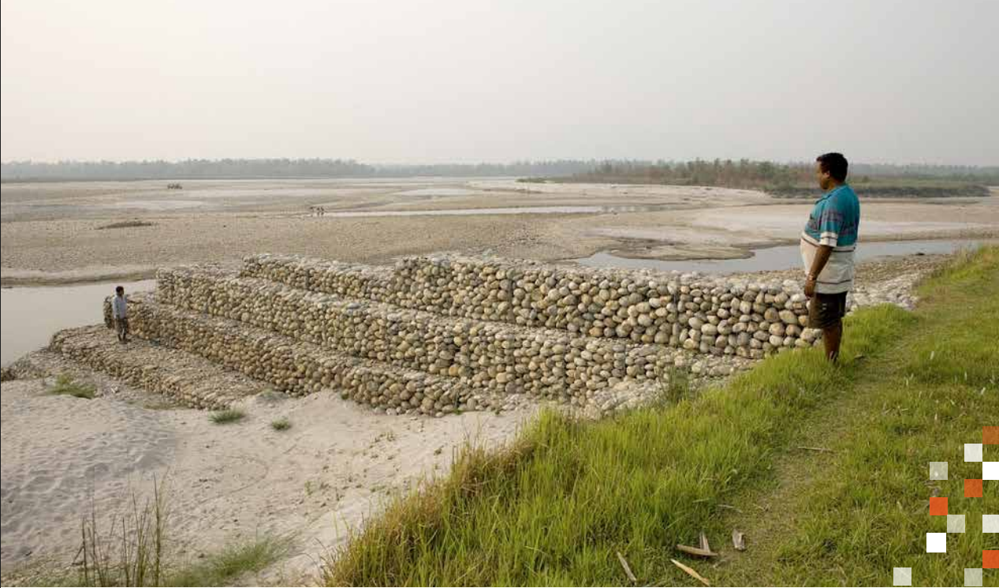
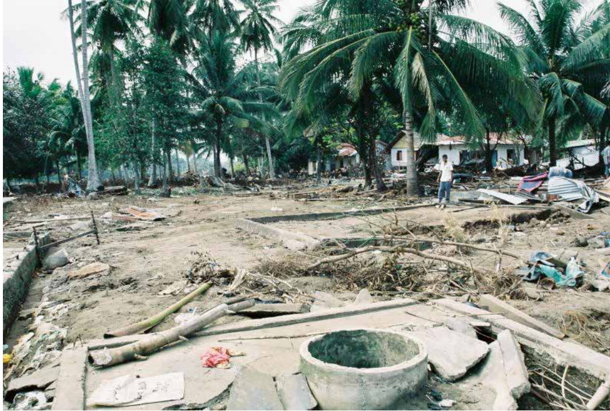

L'objectif principal de l'évaluation des besoins post-catastrophe en matière d'environnement est de préparer une stratégie de relèvement qui guidera la remise en état de l'environnement et des ressources naturelles endommagés par une catastrophe. Cette stratégie doit également favoriser une reconstruction respectueuse de l'environnement dans tous les secteurs. Enfin, le plan de relèvement encourage la remise en état de l'environnement et des ressources naturelles en tant que stratégie de réduction des risques de catastrophe.
L'environnement concerne l'ensemble des secteurs d'activité économique et sociale. La stratégie employée dans ces Lignes directrices consiste par conséquent à prendre uniquement en compte les aspects des effets et des impacts post-catastrophe qui ne sont pas abordés dans les autres sous-secteurs.
En raison de la nature transversale de l'environnement, l'équipe d'évaluation1 doit œuvrer en étroite collaboration avec les autres équipes sectorielles, mais aussi participer si possible aux principales consultations (ou en tirer des enseignements). La coordination avec les autres équipes sectorielles est également importante pour éviter les doubles comptabilisations lors du calcul des effets et des impacts.
Ces lignes directrices contribuent à la méthodologie d'évaluation post-catastrophe à différents titres: elles consolident l'estimation des besoins relatifs au relèvement du développement humain, à la gouvernance et aux capacités institutionnelles, à la réduction des risques de catastrophe pour ce qui touche à l'environnement et aux problèmes d'accès consécutifs à une catastrophe.
Une fois que la décision a été prise de réaliser une évaluation des besoins post-catastrophe (PDNA) pour le secteur de l'environnement dans un pays donné, il convient tout d'abord d'en délimiter la portée. Dans le scénario de base, cet exercice est à réaliser dans le pays concerné après l'évaluation préliminaire des données disponiblessur la catastrophe.
Cette sectio fournit des recommandations sur les méthodes d'estimation de la valeur des dommages et des variations des flux économiques, établie à partir des éléments qui, dans la partie consacrée aux effets, ont eu des répercussions financières. Il peut s'agir des dommages subis par les biens ou des pertes provoquées par les variations des flux financiers en lien avec les services/la production, la gouvernance et les risque
Il est généralement difficile de déterminer la valeur économique des biens environnementaux. Toutefois, les secteurs participant à l'évaluation des besoins post-catastrophe étant censés présenter des estimations financières, le secteur Environnement doit lui aussi procéder à l'évaluation économique des dommages et des variations des flux. Il s'agit d'un processus complexe pour lequel il existe différentes techniques d'évaluation. Le tableau 2 en présente les grandes lignes.
Tableau 2: Méthodes d'évaluation des services environnementaux/écosystémiques types
| Services environnementaux/écosystémiques | Méthodes d'évaluation | ||||
|---|---|---|---|---|---|
| Valeur marchande | Effets sur la productivité | Coût du déplacement | Prix hédonique | Évaluation contingente | |
| Approvisionnement | x | x | |||
| Régulation | x | x | |||
| Appui | x | ||||
| Culturels | x | x | x | ||
Il est important de préciser ici que lorsque les catastrophes causent du tort aux écosystèmes, leurs services d'approvisionnement ne sont pas les seuls à être compromis; les autres services écosystémiques sont également touchés. L'évaluation économique de ces services fait l'objet de recherches de plus en plus nombreuses. Le présent document n'a pas vocation à présenter en détail la méthodologie de quantification de toutes les valeurs décrites dans les parties précédentes. Plusieurs méthodes de quantification sont toutefois proposées ici.
Dans la plupart des situations, compte tenu du niveau de données disponibles après une catastrophe et du temps et des ressources dont on dispose pour collecter de nouvelles données, il n'est pas toujours facile de quantifier la valeur économique de ces perturbations. Dans certains cas, il sera possible d'utiliser d'autres données sur les coûts, produites dans un contexte économique ou environnemental comparable. Cependant, il est important que les services écosystémiques non quantifiés apparaissent dans le rapport si l'on veut que la stratégie de relèvement les prenne en compte à leur juste mesure
Programme des Nations Unies pour l'environnement (PNUE) et Groupe de travail thématique du Comité permanent interorganisations sur le relèvement accéléré, 2008, Environmental Needs Assessments in Post-Disaster Settings, PNUE.
Commission économique des Nations Unies pour l'Amérique latine et les Caraïbes (CEPALC), 2003, Manuel pratique d'évaluation des effets socio-économiques des catastrophes, CEPALC et Banque interaméricaine de développement, Washington.
